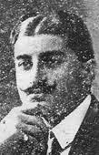
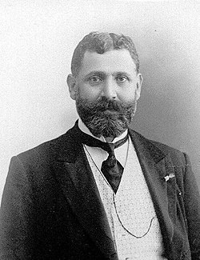
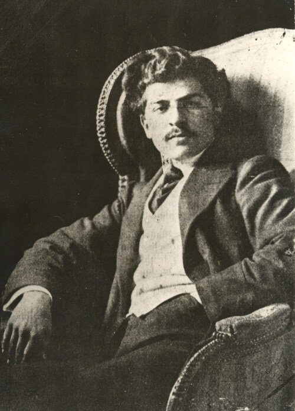
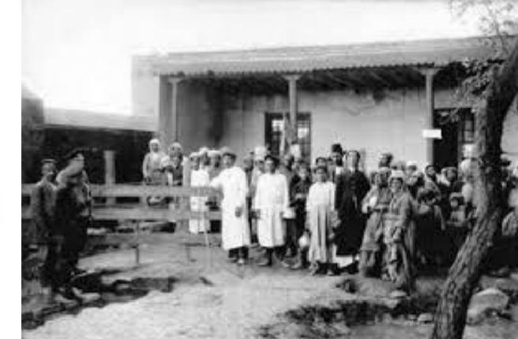

Նրանցից ոմանք եղել են, արքունիքի և իշխանավորների անձնական բժիշկները, շատերն էլ արժանացել են բարձրագույն շքանշանների և պատիվների: Պոլսի կայսերական վարժարանն ավարտած թուրք բժիշկ Նազիմը, որ Պոլսի հայ մտավորականության ջարդերը կազմակերպող հատուկ հանձնախմբի անդամներից էր, վայրագությամբ իրականացրել է ականավոր հայ բժիշկների սպանությունները, քանի որ հայ բժիշկները ավելի մեծ համբավ էին վայելում, քան թուրքերը: Նազիմը ձերբակալել, բանտարկել և աքսորել է տվել տաղանդավոր բժիշկներից շատերին, որոնց թվում էր Օսմանյան կայսրության պառլամենտի անդամ, բանասեր, երկրագործ Նազարեթ Տաղավարյանը:
Նազարեթ Տաղավարյանը ծնունդով սվազցի էր (1862-1915), ավարտել է Փարիզի երկրագործական վարժարանը, այնուհետև կրթություն է ստացել Սորբոնի և բժշկական համալսարաններում: Նա վկայական ստանալուց հետո վերադառնում է Բերիա, որտեղ էլ բացում է բժշկական կլինիկան:Բժիշկը նահատակվում է Ուրֆայի մոտ: Նազիմի զոհերից էր ազգային երեսփոխան Կարապետ Փաշայան խանը, որը ոչ միայն բժիշկ էր, այլև գրող, գրականագետ, հասարակական գործիչ:
Ծնվել է Պոլսում (1864-1915), ավարտել է կայսերական վարժարանը և որպես բժիշկ հաստատվել էր Տիվրիկում: Կարապետ Փաշայան խանը նահատակվել է Ուրֆայից Դիարբեքիր տանող ճանապարհին: Նազիմը դարձավ նաև երիտասարդ բանաստեղծ, բժիշկ Ռուբեն Սևակի նահատակման պատճառը:
Թուրքերը, Ռուբեն Սևակին և հինգ արվեստակցի մարմիններ մերկացնելով, կախում են Գալեճիկ գյուղի ձորի ծառերից: 1915 թ. թուրքական յաթաղանին զոհ գնացած հայ բժիշկների ընդհանուր թիվը 218 էր:
